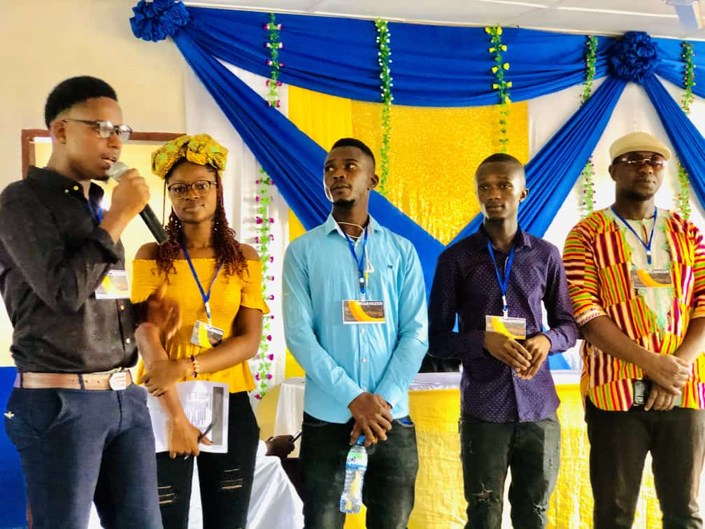

We hand young people the tools, the skills, and the fire to change their own lives and the communities around them.
YAH is a social enterprise dedicated to empowering young people through essential skill development, training, and mentorship — enabling them to thrive in a rapidly changing world.
We believe every young person deserves access to opportunities that foster personal growth, professional development, and positive social impact. Through our innovative programs, we're building a generation of confident, capable leaders.
Learn More About Us
Innovative initiatives designed to empower and transform young lives across communities.
A web and mobile application where young people can access in-demand skills from anywhere, at any time — self-paced and accessible offline.
A transformative annual gathering bringing together young leaders, mentors, and changemakers to share knowledge, build networks, and inspire action.
Numbers that reflect the lives we've touched across communities.
Whether you want to learn, volunteer, partner, or support — there's a place for you at YAH.